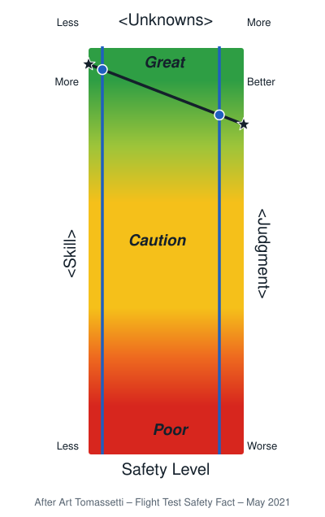
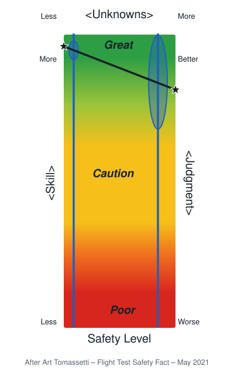

Luck and uncertainty: how luck smears the outcome
Key idea
Our safety level depends on technical skill and on judgment, and the more unknowns a task has, the more judgment matters. Luck “smears” where we end up, and smears it most when unknowns are many. Reducing unknowns improves safety and also makes our analysis of what happened more accurate.
Below: Mike’s 2021 article in full, in his words; the headings are added.
Skill and luck
In the May 2021 issue of Flight Test Safety Fact, Art “Turbo” Tomassetti illustrated a favorite theme of his with a colored chart, showing how skill and luck interact to determine performance.

One thing I love about the way Turbo presents his ideas, whether in an article or a symposium paper, is how he goes right to the heart of the matter in such a simple and direct way. Turbo’s ultimate point here, regarding skill and luck, was this: I want both, … but I can only make one. So the best thing any of us can do … is to try to increase our skill.
An obvious thought, one might say, and yet somehow, because of the way in which Turbo says it, it really hits home.
Another thing I love about Turbo’s presentations is that they make me think. This one made me think a lot, about luck, and about the role luck plays in our performance, our safety and our evaluation of both.
Skill, judgment and unknowns
Not being at all shy about stealing from the ideas of others, I began to play around with variations of Turbo’s colored chart, trying to find a way to express how I felt the issue of luck entered into the whole picture. Where I ended up is with the thought that luck is a kind of analogue to “quantum smearing” – the effect by which tiny particles like electrons don’t have a precise location, but more of a smeared probability of where they might be located.
![Mike's variation on the chart. A Safety Level column shades from Poor (red) at the bottom through Caution (yellow) to Great (green) at the top. Skill runs up the left side from Less to More, Judgment up the right side from Worse to Better, and Unknowns across the top from Less on the left to More on the right. A line joins a high skill point on the left to a good judgment point on the right. A vertical line about two thirds of the way across shows the level of unknowns; it crosses the skill-judgment line near the top of the column, in the Great region, marking the resulting safety level.](luck-chart-2-variation.svg)
Consider this variation on Turbo’s chart. Here I’ve divided Skill into two components – technical Skill on the left axis, and Judgment (quality of evaluation and decision making) on the right axis. I’ve renamed Performance Level as Safety Level, only because that’s the specific aspect of performance that I’m personally drawn to. And I’ve added a third variable, depicted as a left to right variation: the degree of uncertainty or number/significance of unknowns involved.
We can place a point for the level of our technical skill on the left side, and one for the quality of our judgment on the right side, and draw a line between them. Then draw a vertical line – the left/right location of which depicts the level of unknowns or uncertainty we have about the task or project. Then we find our expected safety level at the intersection of those two lines.

We’ve started with very good technical skill, and good judgment in this example, so our result is also good. What we can also see here is that the degree of uncertainty / number of unknowns determines the degree to which technical skill or judgment will predominate in determining our safety level. If unknowns are few, and our vertical line is situated to the left, then technical skill is the overriding determinant, but as unknowns increase, and the vertical line moves to the right, the quality of our judgment becomes more and more the determining factor. But how does luck fit into the picture?
Luck as smearing

This is where the smearing effect comes in. The effect of luck is that we can no longer depend on the intersection of the two lines on the chart to precisely locate our resulting safety level. Luck “smears” the location of this intersection, but it does so differently depending on the level of uncertainty / quantity of unknowns. If the unknowns are few, then not only does technical skill predominate, but the opportunity for luck to play a part is reduced, and the smearing is minimal. If the unknowns are many, then not only does judgment predominate, but the opportunity for luck to alter the outcome is greatly increased. Note that here, in the case where unknowns were high, the smearing effect has both dragged our possible safety level outcome into the caution region, and elevated it to a level above what is commensurate with our level of judgment.
Luck in the analysis afterwards
And, of course, these effects feed back into our post event analysis as well. Where luck has a greater opportunity to affect our results, we are more subject to making errors in our analysis of just what was the quality of skill or judgment we brought to bear on the task.
Three things we can do up front
All of this would suggest that there are three things we can do up front that will improve our safety level. We can increase our skill level, we can increase the quality of our decision making, and we can reduce the number and significance of unknowns. This third one has the additional benefit that by reducing the opportunity for luck to play a part in the outcome, it also improves the accuracy of our post event analysis of what had been the quality of our decision making.
Cite this page
Meier, M. (2026, November 12). Luck and uncertainty: How luck smears the outcome (Edition 1.0). meiersafe.com. https://meiersafe.com/luck-and-uncertainty/
Chicago and BibTeX
Meier, Mike. “Luck and Uncertainty: How Luck Smears the Outcome.” Edition 1.0. meiersafe.com, November 12, 2026. https://meiersafe.com/luck-and-uncertainty/.
@misc{meier2026luckanduncertainty,
author = {Meier, Mike},
title = {Luck and Uncertainty: How Luck Smears the Outcome},
year = {2026},
note = {Edition 1.0},
url = {https://meiersafe.com/luck-and-uncertainty/}
}
Luck and uncertainty by Mike Meier, meiersafe.com/luck-and-uncertainty/, CC BY-SA 4.0. Art Tomassetti’s words and chart are his, used with permission; Mike’s three charts adapt Art’s and are outside the license too. All four charts may be shown in a briefing as they are, with the source note on each kept (License).